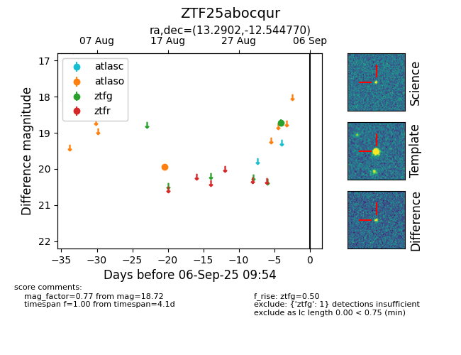

FINK: ZTF25abocqur
Lasair: ZTF25abocqur
ALeRCE: ZTF25abocqur
ZTF25abocqur (ztf,fink)
equatorial (ra, dec) = (13.2902,-12.54477)
galactic (l, b) = (124.6013,-75.41093)

last atlaso=19.95, ztfg=18.72
1 atlaso, 1 ztfg detections